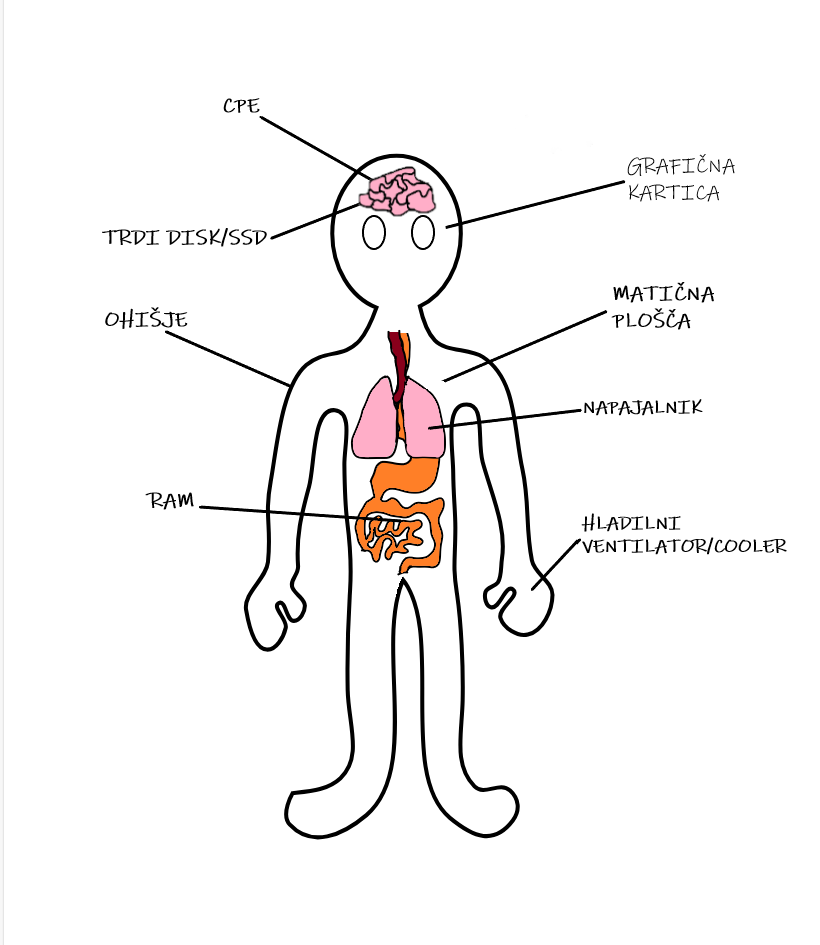
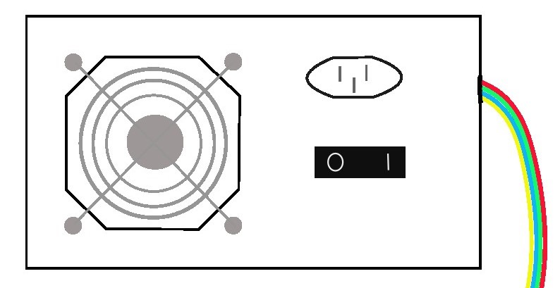
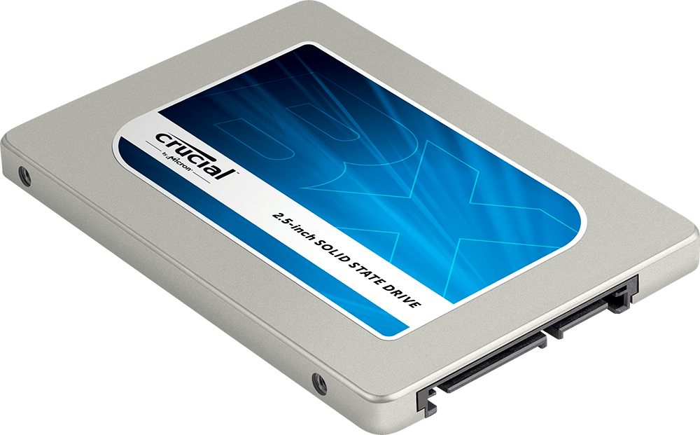
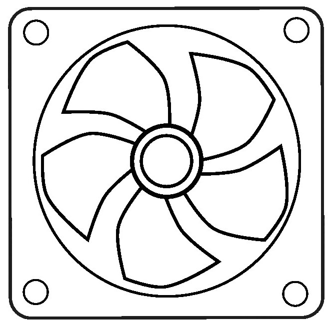
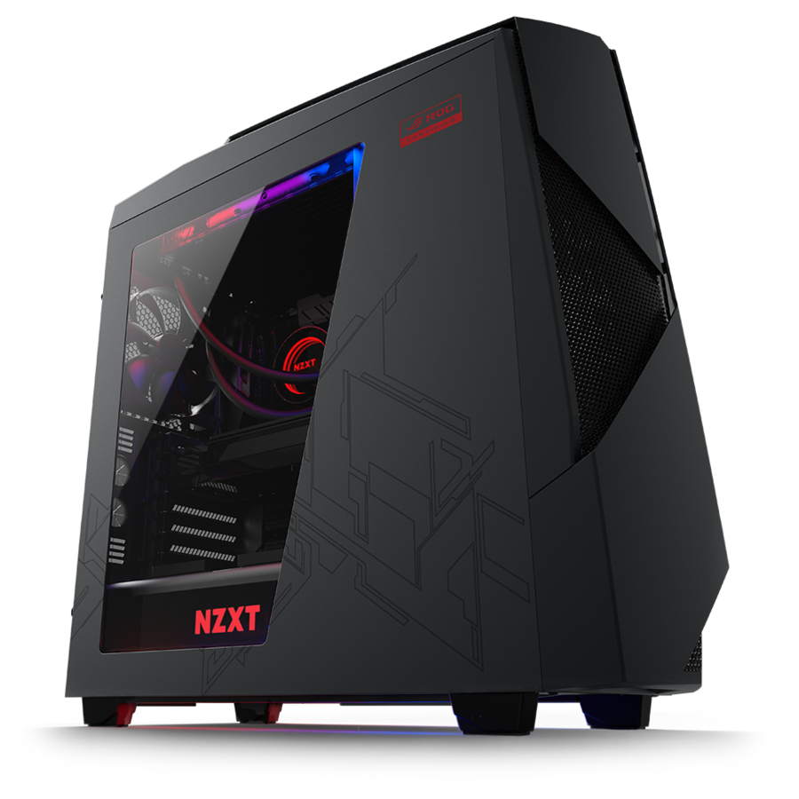

PC MATCH
KAJ JE RAČUNALNIK?
Računalnik je elektronska naprava, ki lahko izvaja različne operacije obdelave podatkov, kot so shranjevanje, pridobivanje in obdelava podatkov. Sestavljen je iz strojne opreme (hardware) in programske opreme (software). Glavne komponente vključujejo centralno procesno enoto (CPU), pomnilnik (RAM), matično ploščo, grafično kartico (GPU), trdi disk ali SSD, napajalnik (PSU), ohišje in hladilni sistem. Računalniki se uporabljajo za naloge, kot so obdelava besedil, brskanje po internetu, igranje iger, urejanje fotografij in videoposnetkov ter programiranje. So ključni del vsakdanjega življenja in različnih industrij.
KOMPONENTI RAČUNALNIKA:
- CPE-CENTRALNA PROCESNA ENOTA
- MATIČNA PLOŠČA
- RAM
- GRAFIČNA KARTICA
- POWER SUPPLY/NAPAJALNIK
- SSD ALI HARD DISK/TRDI DISK
- HLADILNI VENTILATOR-COOLER
- OHIŠJE
CPE-CENTRALNA PROCESNA ENOTA

Centralna procesna enota ali splošno tudi poimenovana samo kot procesor, je obdelovalna enota samega računalnika.
Ta krmili, nadzoruje, uskljauje in izvaja osnovne operacije (aritmetične, logične, primerjalne), na zelo podoben naščin deluje kot človeški možgani.
Cpu (Central proces unit) je sestavljen iz:
- krmilne enote: ta nadzoruje, organizira prenos podatkov in analizira ukaze za njihovo pravilno izvajanje;
- registri: so hitre pomnilniške celice, nad katerimi ALU izvaja operacije, znotraj teh najdemo akumulator in programski števec.
- ALU-Aritmetično logična enota (unit), izvaja osnovne operacije; aritmetične, logične, primerjalne.
INTEL IN AMD
Prvi mikroprocesor je bil Intel 4004, ki ga je seveda leta 1971 naredila Intel (Integrated Electronics Corporation). Leta 1991 se prebije skozi monopolje mikroprocesorjev tudi AMD (Advanced Mikro device), ki je isto kot Intel začela prvo z izdelavo pomnilnikov.
MATIČNA PLOŠČA

Matična plošča je glavna plošča v računalniku, ki povezuje vse njegove dele. Na njo so priključeni procesor, pomnilnik, trdi diski, grafična kartica in druge naprave. Omogoča, da te komponente med seboj komunicirajo in delujejo skupaj. Vsebuje tudi osnovno programsko opremo imenovana BIOS, ki pomaga pri zagonu računalnika.
RAM

RAM oziroma pomnilnik, hrani programe, ukaze, vhodno, vmesne in kočne rezultate. Pomninik je linearno zaporedje celic. Seveda v računalniku imamo dva tipa pomnilnika to sta: RAM in ROM. ROM je bralni pomnilnik, ki se nahaja že na sami matišni plošči, medtem ko RAM (Random Acess Memory) je bralno pisalni pomnilnik, ki se ga kupi posebej. Na ta računalnik naloži program in nato vanj med delom vpisuje podatke in jih bere.
GRAFIČNA KARTICA

Grafična kartica je komponenta v računalniku, ki skrbi za prikazovanje slik in videa na zaslonu. Ima svoj procesor, imenovan GPU (grafični procesor), in lastni pomnilnik, kar ji omogoča hitro obdelavo grafičnih podatkov. Grafične kartice so ključne za igranje iger, gledanje filmov v visoki ločljivosti in delo z grafičnimi programi. Lahko so integrirane v matično ploščo ali pa kot ločene kartice, ki jih je mogoče nadgraditi.
POWER SUPPLY/NAPAJALNIK
Napajalnik služi za priključitev računalnika na električno energijo. Pretvarja vhodno napetost v različne napetostne nivoje, vključno z 12V, in preko napetostnih vodnikov napaja vse komponente računalnika. Znotraj sebe vsebuje ventilator saj se ta segreva med svojim delovanjem.
SSD ALI HARD DISK/TRDI DISK
SSD (solid-state drive) in trdi disk (HDD - hard disk drive) sta vrsti pomnilniških naprav, ki se uporabljata za shranjevanje podatkov v računalniku. V sodobnih računalnikih se pogosto uporabljata obe vrsti pomnilniških naprav: SSD za operacijski sistem in programe, ki zahtevajo hitrejši dostop do podatkov, ter HDD za shranjevanje večjih količin podatkov, kjer hitrost ni tako kritična.
SSD
SSD-ji uporabljajo flash pomnilnik za shranjevanje podatkov, kar pomeni, da nimajo premikajočih se delov zato so bolj odporni na fizične poškodbe. Ta je bistveno hitrejši pri branju in pisanju podatkov v primerjavi s trdim diskom, kar pomeni hitrejši zagon računalnika in aplikacij.
HARD DISK
HDD-ji uporabljajo magnetne plošče, ki se vrtijo, in bralne/pisalne glave za dostop do podatkov. Ker tej imajo premikajoče dele so tudi bolj občetljivi na fizične poškodbe. Trdi diski običajno ponujajo več prostora za shranjevanje ampak so tudi zelo počasni v primerjavi s SSD-jem.
HLADILNI VENTILATOR-COOLER
Cooler (hladilnik) je naprava v računalniku, ki pomaga ohranjati komponente hladne, da se ne pregrejejo. Sestavljen je iz kovinskega dela, ki odvaja toploto, in ventilatorja, ki piha zrak, da ohlaja procesor. Hlajenje je pomembno, da računalnik deluje pravilno in ne pregori.
OHIŠJE
Ohišje je kot škatla za računalnik. V njej so nameščene vse notranje komponente, kot so matična plošča, procesor, trdi disk in grafična kartica. Ščiti jih pred prahom, umazanijo in poškodbami ter omogoča povezavo zunanjih naprav, kot so zasloni, miške in tipkovnice. Poleg tega ohišje daje računalniku tudi videz, saj je običajno oblikovano estetsko.
Navedeni podatki so naučeni bili pri predavanjih